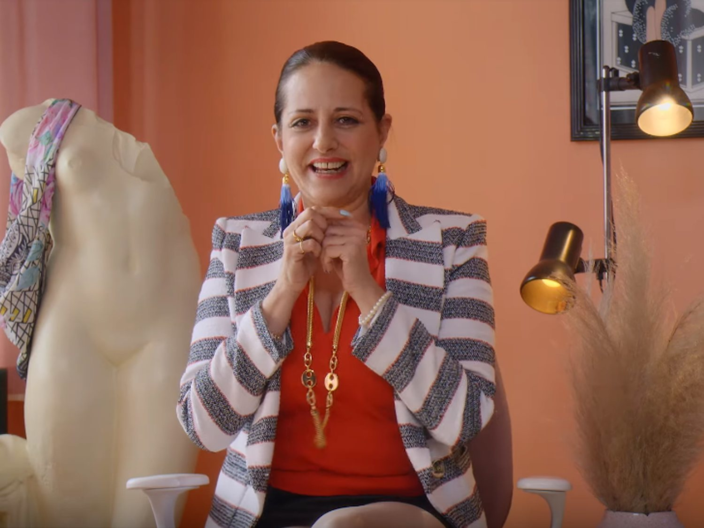
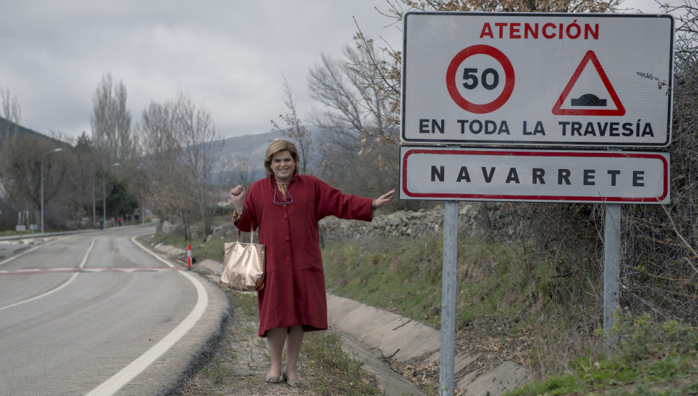
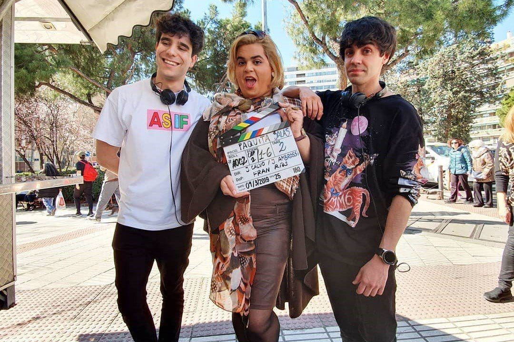
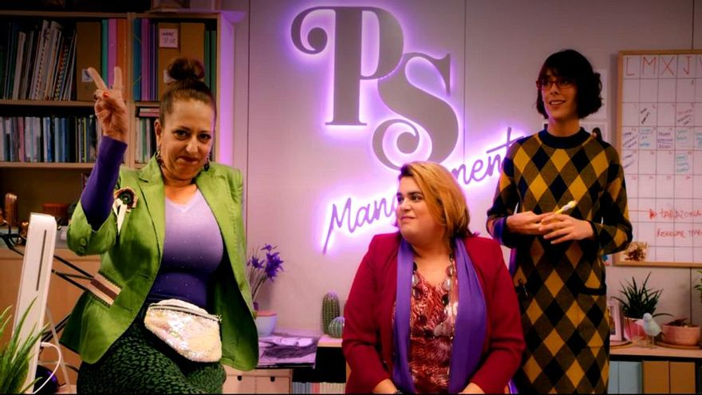

Mawi es una de las jóvenes promesas representadas por Paquita. Su talento y simpatía la convierten en un personaje fresco y carismático.
Macarena García interpreta a una actriz talentosa con gran sentido del humor. Su papel refleja la lucha de los artistas por hacerse un nombre.

Noemí es la asistente de Paquita, organizada y eficiente. Su personalidad aporta equilibrio y lógica en medio del caos creativo.
Mariona es otra de las artistas gestionadas por Paquita. Su carácter extrovertido y talento único la hace destacar en el elenco de la serie.

Navarrete no es un pueblo, Navarrete es un sentimiento, es el pulmón de La Rioja y el sitio donde se inventó la dignidad. Tú allí te bajas del coche, respiras ese aire puro con olor a pimiento asado y a campo, y de repente se te quitan todas las tonterías de los "castings" y las dietas de alcachofa de Madrid. Allí la gente es de verdad, de las que te dan un abrazo que te recoloca las vértebras y te ponen un plato de melocotón en vino que te resucita a un muerto. Entre las ovejas de Pedrín el pastor y esas calles con más historia que el currículum de Lidia San José, una se siente como lo que es: una estrella, pero de las que pisan tierra y saben lo que vale un buen torreznillo. ¡Que me mudo allí mañana mismo y monto PS Management en una bodega, te lo digo yo!

¡Ay, Paquita! Qué alegría hablar de la Paca. Los Javis (Javier Calvo y Javier Ambrossi) son las mentes brillantes tras este fenómeno que nació casi por casualidad y acabó conquistando Netflix. De Instagram a la gloria: Todo empezó como una broma entre amigos. Grabaron un vídeo de 15 segundos para Instagram donde Brays Efe improvisaba el personaje. Inspiración real: El nombre viene de la abuela de Javi Calvo (Dolores Salas) y el personaje se nutre de las "señoras de España" y representantes reales que conocieron en sus inicios como actores.
Javier Calvo Javier Ambrossi
PS Management es mi agencia de representación de talentos, propulsada por Javier Calvo y Javier Ambrossi ("Los Javis"). La empresa es el eje central de mi vide, reflejando el auge y la posterior decadencia de una representante de actores anclada en los métodos de los años 90.